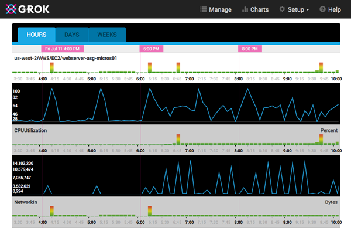
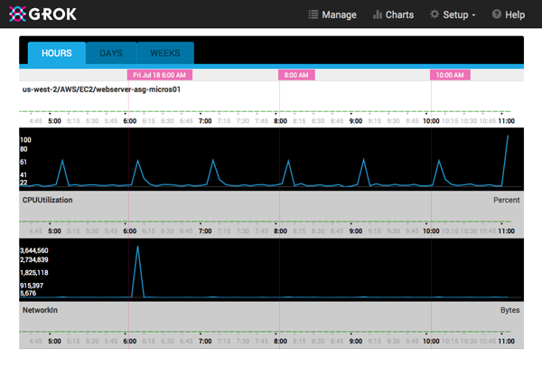

Cleanup on ASG 3
 Joe Block•Site Reliability Engineer
Joe Block•Site Reliability Engineer
NOTE: Numenta has announced a strategic partnership with Avik Partners, please read more about the future of Grok for IT Analytics.
I was at the AWS summit in NYC, and when I got back to California, I saw a notification from Grok that our web server auto scaling group (ASG) was acting anomalously. At first I thought it was only because we were seeing heavier than usual traffic since we were mentioned in Information Week and VentureBeat, but when I checked it out in Grok’s mobile app, I noticed a couple of odd and interesting things.
First, I saw an odd pattern in the NetworkIn graph - instead of a flattish line with minor variation and different sized rough edged spikes I’d expect from regular web requests, or a line trending upward as the web traffic went up from the media mentions, what I was seeing was a stable line with very high, very sharp spikes at regular intervals. On closer examination, the peak spikes were even more suspicious - they were all very nearly the same size.
Secondly, Grok had also flagged the group’s CPU metric, and when I looked at it, the graph was very atypical. This ASG normally has a CPU load that hovers around 20%, and what I was seeing was hovering around 40-45% with surges to 100%. The surges were not as sharply edged as the network spikes, but there were still surges in load.
Finally, even though the CPU was staying above the level we’d configured our ASG to add instances at, when I took a look at the ASG instance count it was still hovering around the lower bound of the ASG’s size limit.
After staring at the individual graphs on the phone for a bit, I pulled up the Grok web chart page so I could compare them to each other - sometimes I prefer using the web chart because it allows me to view more than one of an instance or ASG’s underlying metric graphs’ raw data charts at once, and also because by viewing them on a 15 inch MacBook Pro screen instead of a phone, I can see a bigger picture of what is going on. Sure enough, once I expanded the CPU and NetworkIn underlying charts on my laptop I could see that the surges in CPU were lagging behind the spikes in network, and I immediately got an idea of what was going on, and a quick look at the ASG’s scaling history and the logs on a freshly started web server instance confirmed my suspicions.

Here’s a little background about our web server back end auto scaling group. The Numenta web site itself is stored in a git repository and uses a combination of docpad, nodejs and some custom scripts to render the static pages of the site from various source assets. Each web server updates the local copy of the git repository every fifteen minutes, and if the master branch has changed, it renders the site and swaps the new rendered document directory tree into place. That’s the normal process, and because we’re using git we only have to download the changes in the source files since the last site update.
What was happening in this case though, was that the site renders were failing on fresh instances. So the ASG would spin up a new instance, the new instance would have to download the entire git repository, it would attempt to run the build process and the build would fail. Then the health check script would run, see that the web server didn’t have a valid document root, report the instance as unhealthy to the ASG, and the ASG would terminate the instance. Once the cool down expired, we’d lather, rinse and repeat. If all the old instances had gotten terminated in the ASG, we’d have had downtime on the website since new instances were failing to become healthy and get added to the load balancer.
The reason the problem was only showing up on new instances was because the support script was just checking that a particular component was installed, not that it was a specific version. When the upstream source for that component updated to a new version, it wasn’t compatible with our build process, so new instances would fail to build. The identically sized NetworkIn spikes were when a new instance started up and did the initial git clone of the website repository, and the wider CPU spikes were when the new instance would attempt to render the website’s static assets.
We resolved the issue in two ways. In the short term, we updated the build script so that it specified exact versions for all of its dependencies. This stopped the new instance churn right away. In the long term, we stopped rendering the site on the web servers - we had initially decided to build the static site on the web server to eliminate machine-generated files from the repository, but now we pre-render everything and check the static site into the repository. It can be served immediately after a git pull and the web servers don’t have to do anything else when we update the web site content.
Here’s an example of the new, normal curves after all the fixes were put in place:

I could have figured this out without Grok, but I would have had to look at every metric for the ASG, then scrubbed through them to find where the anomalous behavior began, then rummaged through the log files, but, and this is an important but, I wouldn’t have started looking until the last good web server backend failed and I got an alert that the website was down. Thresholds on the CPU load or NetworkIn wouldn’t have helped me - the spikes I saw were what I would have expected to see when a new instance was added to the ASG, what made them unusual was how rapidly the instances were getting added and dropped. Instead, Grok notified me when the anomalous behavior started, highlighted exactly which metrics were showing the strange behavior, and let me compare them to each other immediately so I could get good picture of the situation before I started looking in my logs, and before the website actually went offline.
Joe Block•Site Reliability Engineer